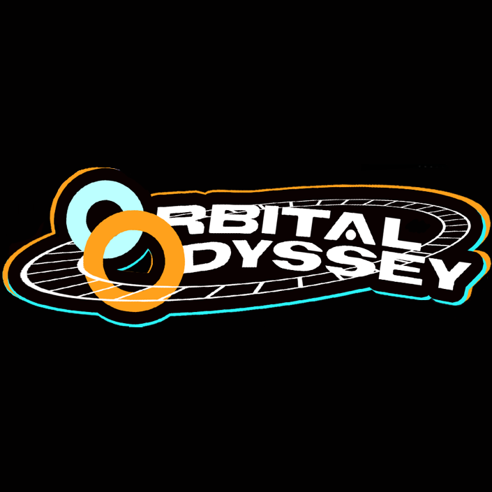
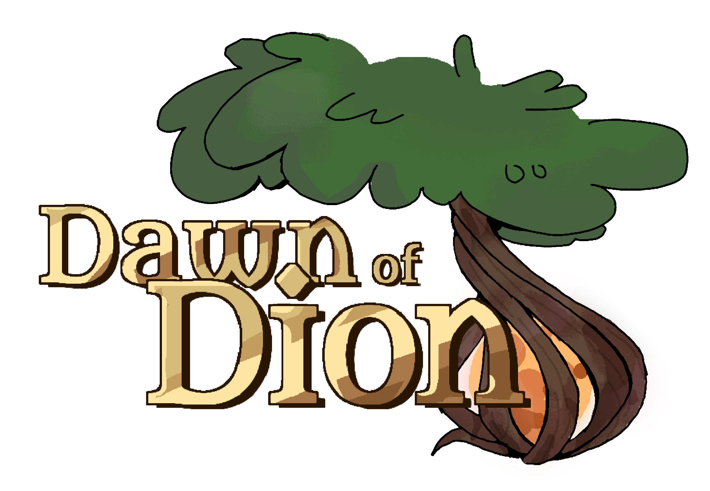

A minimal instruction set architecture bundled with graphics and designed for ease of implementation.
Includes virtual machines written in C, Python, and Javascript, assemblers written in Python and C, and a high level language compiler made with Python and Antlr4.
A four-player party video game created by students at FSU.
Created using the Godot game engine from Fall 2024 to Spring 2025.

A 3D platformer video game created by students at FSU.
Created using the Unity game engine from Fall 2025 to Spring 2026.
